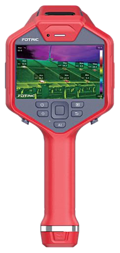
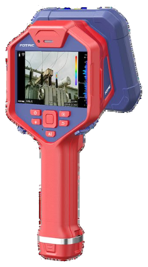
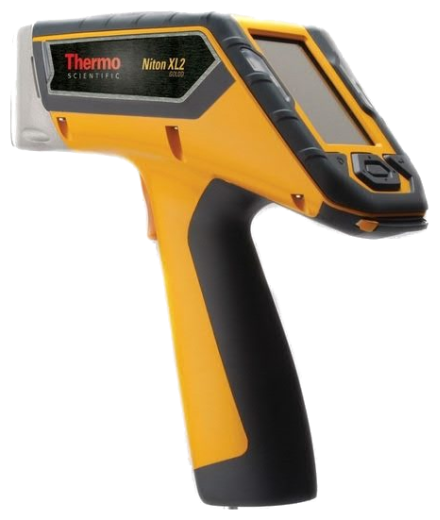
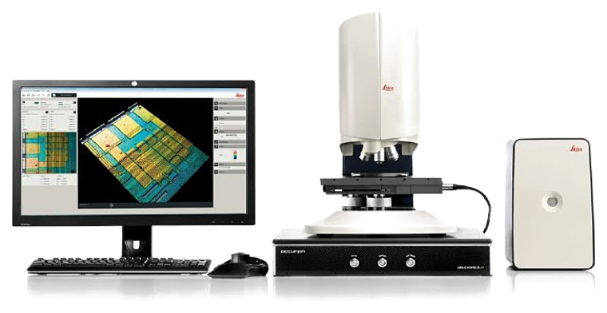
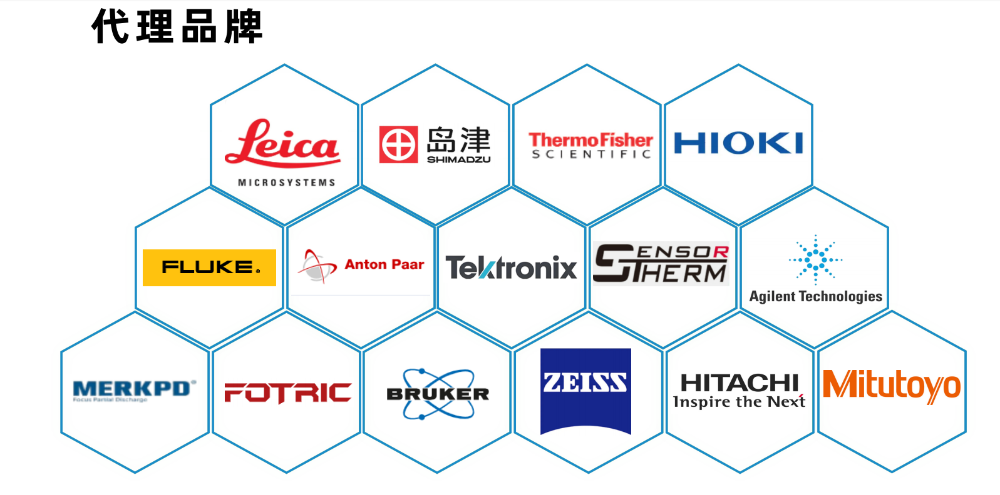
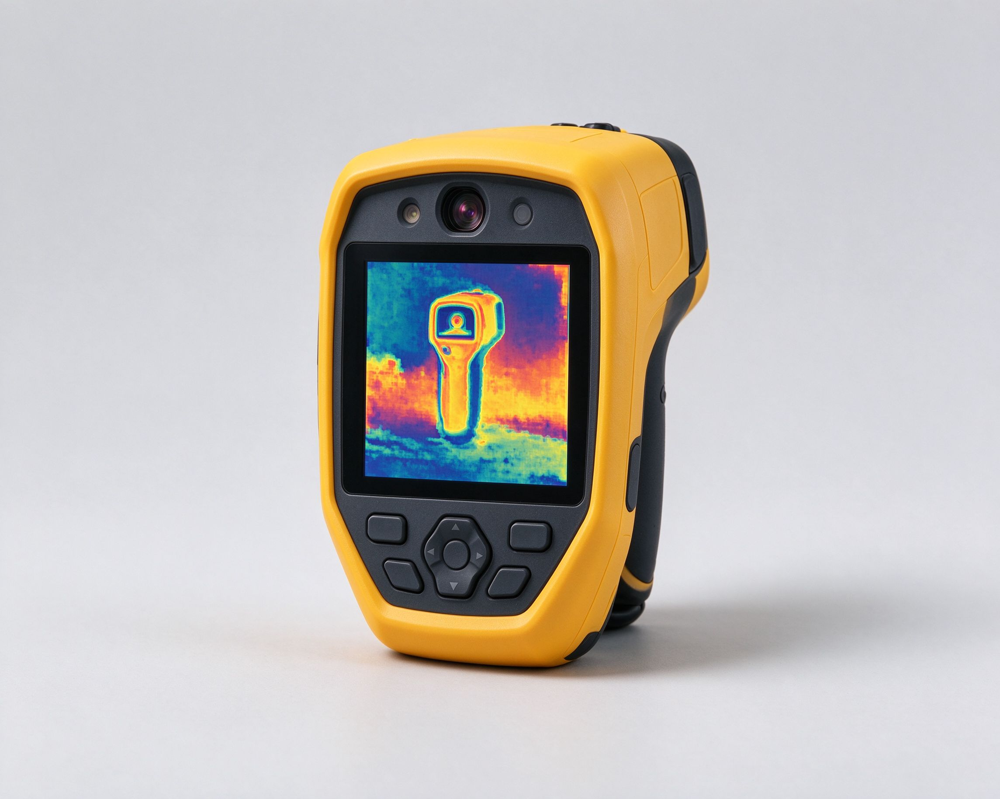

多品牌仪器
一站式选型
红外热像、声学成像、显微观察、材料分析、力学测试全覆盖。正规授权渠道，原厂序列号与保修卡，支持官网验真。
极曜微科技 · 工业检测仪器综合供应商
红外热像、声学成像、显微观察、材料分析、力学测试全覆盖。正规授权渠道，原厂序列号与保修卡，支持官网验真。

-40℃ ~ +2000℃ 全覆盖。FOTRIC 348L / 2810、Fluke TiX1060 / Ti480U，手持、在线、科研、炉口四种场景都有对应机型。

162 个 MEMS 麦克风阵列。FOTRIC AC60、Fluke ii1020C，气体泄漏、局部放电、气密性检测一眼定位。

Thermo Niton XL2 系列手持 XRF，废旧金属分选、PMI 来料检验当场出结果，不用送样。

Leica WYKO DCM8 纵向分辨率 0.1nm，粗糙度、台阶高、膜厚一次测完。
Products
下面六块是主力方向。完整目录共 16 大类 101 款型号，每款都带说明和画册原图，在产品中心页可以按关键词搜。
FOTRIC 2810 / 348L / 248M、Fluke TiX1060 / Ti480U / RSE60、巨哥 MAG-F6、艾睿 G600。
看这类型号 ›Fluke ii1020C 气体泄漏与局放二合一、FOTRIC AC60 162 麦克风阵列。
看这类型号 ›徕卡 DM4M / DM18M / DCM8 / DVM6、JEOL 台式与场发射电镜、赛默飞 APREO。
看这类型号 ›岛津 AGX-V / AG-X / UH-FX 2000KN 万能与液压机、MMT 微力疲劳、安东帕纳米压痕。
看这类型号 ›岛津 XRD-7000 / EDX7000 / EPMA-8050G、安捷伦 5110 ICP-OES、力可碳硫与氧氮氢。
看这类型号 ›氙灯老化、UV 紫外老化、臭氧老化、热老化烘箱，可靠性测试配套。
看这类型号 ›
Gallery



How it works
测什么参数、预算多少、用在产线还是实验室 —— 这三句话说清楚，我们在多品牌之间帮你配。
举例子最快：测炉口温度、查压缩空气漏点、给来料做金相。
给 2~3 个档位的机型对比，写清分辨率、量程、精度差在哪。
现货当日确认；需要调货的给准确到货时间，不口头承诺。
随机附原厂序列号与保修卡，到期校准、维修、耗材后续都接。
Service
正规授权渠道，带原厂序列号与保修卡，支持官网验真，杜绝水货翻新。
说清测什么参数、什么预算、什么场景，我们在多品牌间挑最合适的型号。
保修期内对接原厂售后，到期校准、维修、耗材更换渠道一并提供。
常见机型当天出价格，批量与特殊规格直接打电话，不让你等邮件。